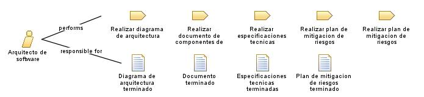

| Role: Arquitecto de software |
| |
 |
| El arquitecto de software es responsable de diseñar y estructurar la arquitectura de un proyecto de software para garantizar su funcionalidad, rendimiento y escalabilidad. |
| Synonyms: Diseñador de Software |
|
Relationships
 |
| Primary Performs |
|
| Modifies |
|
Main Description
| El arquitecto de software es un profesional encargado de definir la estructura, componentes y relaciones del sistema de
software. Trabaja en colaboración con los desarrolladores, analistas y otros miembros del equipo para comprender los
requisitos del proyecto y traducirlos en una arquitectura técnica sólida. El arquitecto de software debe considerar
aspectos como la seguridad, la escalabilidad, la disponibilidad y la eficiencia del sistema. |
Staffing
| Skills | Conocimientos tecnicos, Pensamiento analitico, Resolucion de problemas, Habilidades de diseño, Comunicacion Efectiva. |
| Synonyms | Diseñador de Software |
Key Considerations
Diseño de la arquitectura, Conocimiento tecnico, Habilidades de comunicacion, Habilidad analitica.
|
|